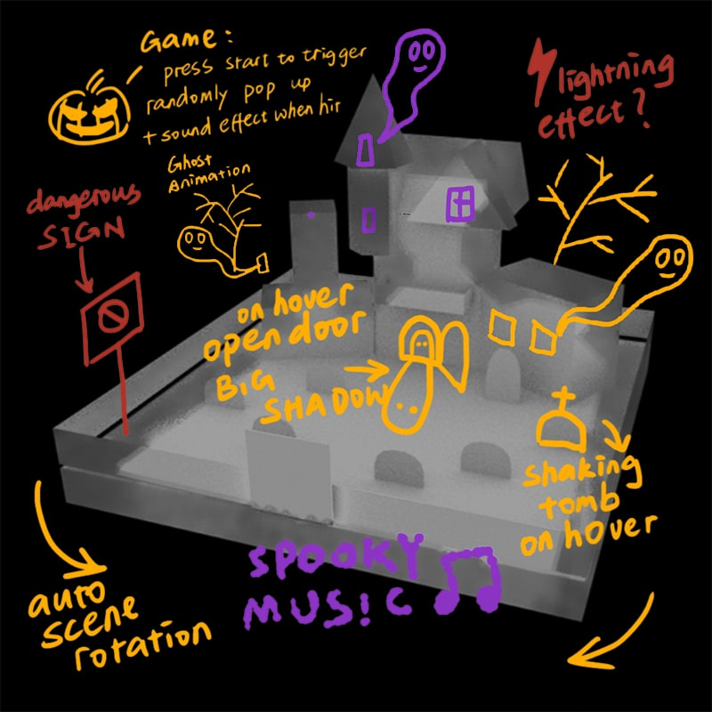
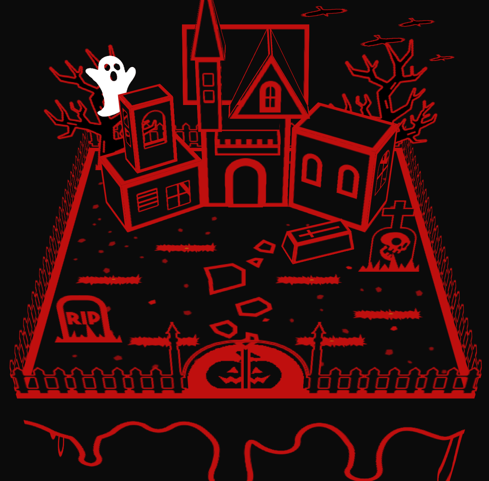

Whac-A-Pumpkin!
Web-based mini game
2019
View Game
About
Inspired by the popular arcade game Whac-A-Mole, Whac-A-Pumpkin! is a Halloween themed web-based mini game with the mixture of 2d and 3D style.
This is an individual project. The aim of this project is to explore the possibility of using CSS 3D Transforms to create unique user interaction.
Development
Tools
Website development – HTML, CSS and JavaScript
3D model prototyping - Autodesk Maya
Image design - Adobe Photoshop
Music and sound editing - Logic Pro X
Whac-A-Pumpkin! Whac-A-Pumpkin! Whac-A-Pumpkin! Whac-A-Pumpkin! Whac-A-Pumpkin! Whac-A-Pumpkin! Whac-A-Pumpkin! Whac-A-Pumpkin! Whac-A-Pumpkin! Whac-A-Pumpkin!

